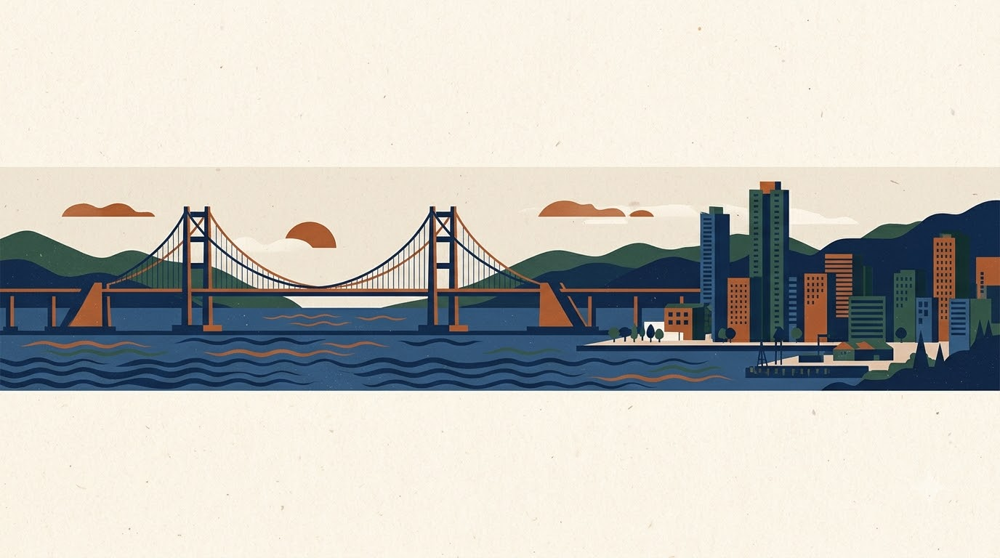
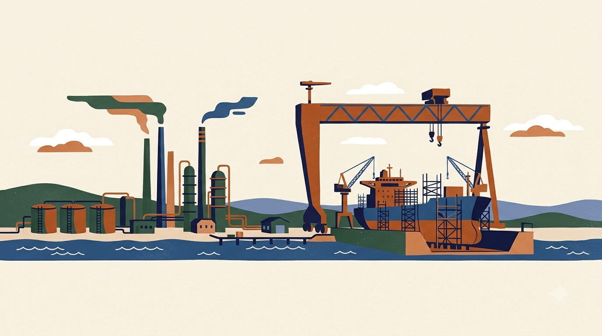

울산도서관은 부산도서관보다 공업 관련 분야(KDC 550 기계공학 · 570 화학공학 · 580 제조업)의 대출 비중이 높을 것이다.
근거: 울산은 자동차 · 조선 · 석유화학 중심의 제조업 도시
부산도서관은 울산도서관보다 의학 · 건강 분야(KDC 510 의학)의 대출 비중이 높을 것이다.
근거: 부산은 청년층 유출로 고령층 비중이 높고, 60세 이상은 20 · 30대보다 의학 · 건강 도서를 많이 빌림
두 가설 모두 일반 도서(아동 도서 제외) 기준
| 분야 (아동 도서 제외) | 60세 이상 | 20 · 30대 | 판단 |
|---|---|---|---|
| 810 한국문학 | 55.1% | 58.9% | 고령층이 더 높지 않음 → 처음 세운 가설 기각 |
| 510 의학 (건강) | 4.3% | 0.5% | 60세 이상이 약 8배 → 가설 2의 근거로 채택 |
"고령층은 한국문학을 많이 빌린다"를 근거로 삼으려 했지만, 비교해 보니 20 · 30대의 한국문학 비중이 더 높았음. 다른 연령과 비교하지 않으면 근거가 될 수 없다는 점을 확인.
각 연령대 상위 200권만 본 결과이고, 510 분야는 60세 이상 목록에서 9권뿐이라 표본이 작음. 실제 분석에서 두 도서관 전체 장서로 다시 확인.
자료: 도서관 정보나루 인기대출도서 (2026.01.01 ~ 10.24, 전국, 연령별 상위 200권, 대출건수 기준 비중) · ISBN 부가기호 첫 자리 7(아동) 제외

부산광역시 대표도서관

울산광역시 대표도서관
| 항목 | 내용 |
|---|---|
| 제공 | 국립중앙도서관 도서관 정보나루 (data4library.kr), 오픈 API |
| 내용 | 도서관별 월별 전체 장서 목록과 대출 빈도 |
| 수록 기간 | 부산 2021.05 ~ 2026.09 · 울산 2020.02 ~ 2026.09 |
| 분석 기간 | 2021.05 ~ 2026.09 — 두 도서관이 겹치는 기간만 사용 |
| 주요 항목 (예정) | 도서명, 저자, 출판사, 발행년도, ISBN, 부가기호, 주제분류번호(KDC), 대출건수 — API 응답으로 확인 예정 |
| 갱신 · 조건 | 월 1회 갱신 · ISBN 없는 장서 제외 · 저작자표시(BY) |
전체 대출건수와 함께 장서 1권당 대출건수(장서 회전율)를 계산해 도서관 크기 차이를 보정
KDC 주류(000~900) 별로 전체 대출 중 몇 %를 차지하는지 → 많이 빌려가는 분야
KDC 주류 별로 전체 장서 중 몇 %를 차지하는지 → 많이 가진 분야
②와 ③을 나란히 비교해 "많이 가진 분야"와 "많이 빌려가는 분야"가 일치하는지 확인합니다. 대출 비중이 장서 비중보다 크면 그 분야는 가진 것보다 많이 이용되는 분야입니다.
가설 확인은 강목 단위로: 가설 1은 550 · 570 · 580, 가설 2는 510. 조선(선박공학)은 550 안(559 기타공학)에 속하는지 실제 도서의 분류번호로 확인하고, 516 산부인과 · 소아과는 젊은 가구 영향이 있을 수 있어 따로 살펴봅니다.
주제별 비중 막대 비교 (구상 예시 — 실제 데이터 아님)
왼쪽부터 KDC 000 총류 … 800 문학 … 900 역사 · 같은 형식으로 울산도서관도 그려 나란히 비교
| 예상 문제 | 예시 | 처리 계획 |
|---|---|---|
| 분류번호 표기 혼재 | "813.6", "813.6-ㄱ123", "813" | 앞 세 자리 숫자만 추출 → 첫 자리로 KDC 주류 구분 |
| 분류번호 결측 | 빈칸, 숫자가 아닌 값 | 지우지 않고 "미분류"로 따로 집계, 비율을 함께 보고 |
| 같은 책이 여러 행 | 복본, 권차(1권 · 2권) | ISBN과 권 정보를 보고 같은 자료인지 판단 → 규칙을 정해 일관 적용 |
| 대출건수의 의미 | 월별 값인지 누적 값인지 | API 응답과 설명을 확인 후 계산 방식 결정 (누적이면 등록 시기 고려) |
| 아동 도서 혼입 | 창작동화도 813(한국소설)로 분류 | ISBN 부가기호 첫 자리 7(아동)은 제외하고 일반 도서만 비교 |
| 기간 불일치 | 울산만 2020.02부터 존재 | 2021.05 ~ 2026.09 공통 기간만 사용 |
모든 처리는 정제 로그에 기록 — 무엇을 · 왜 · 몇 행에 적용했는지
인증키 신청 완료, 승인 후 수집 시작
두 도서관 공통 기간 장서/대출 데이터
행 · 열 구성, 결측치, 중복 확인
정제 규칙 적용 · 로그 기록
세 지표 계산, 비교 그래프
이 슬라이드에 분석 결과 반영